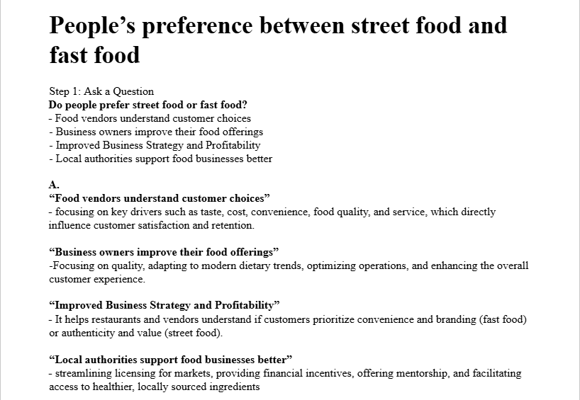
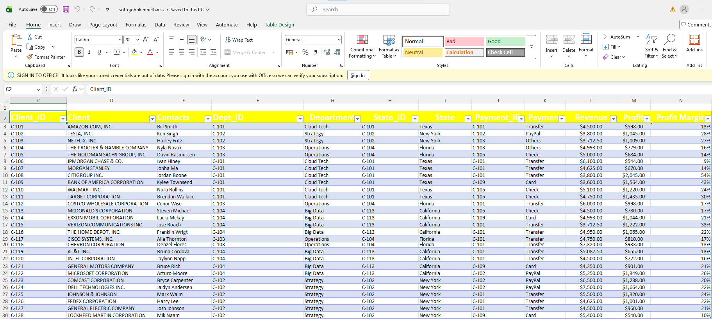
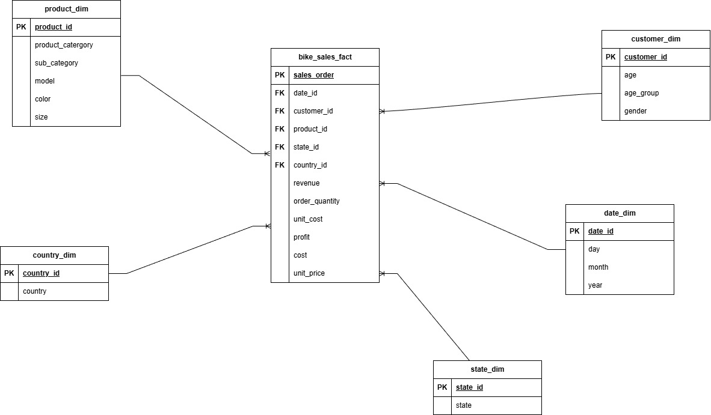
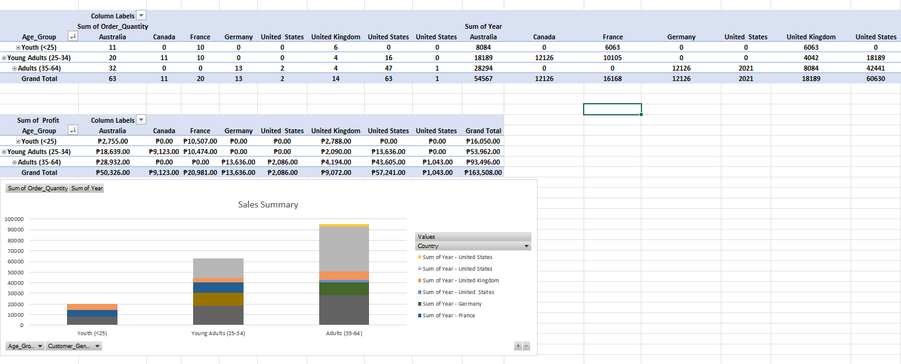
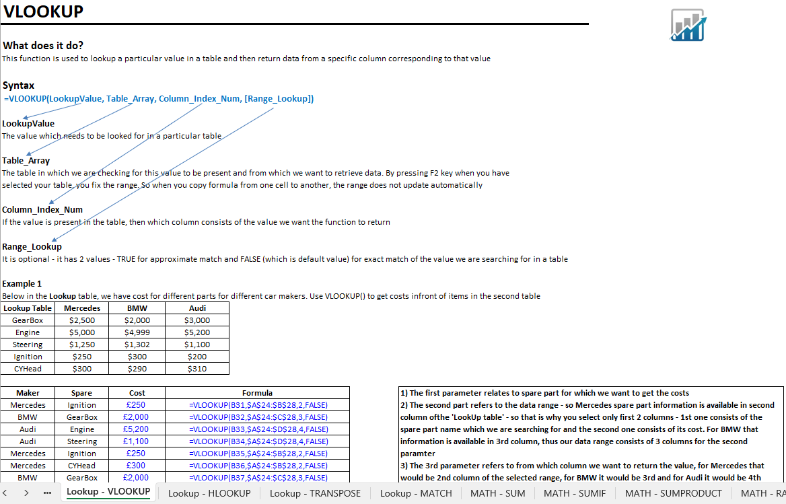
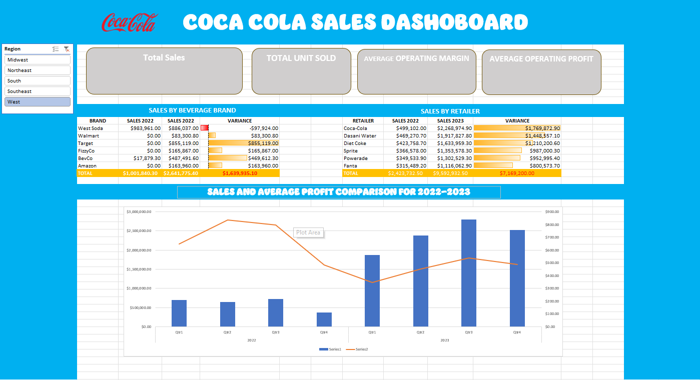
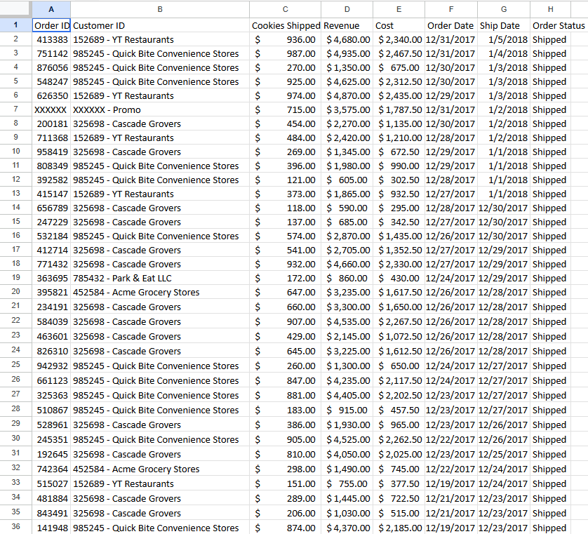
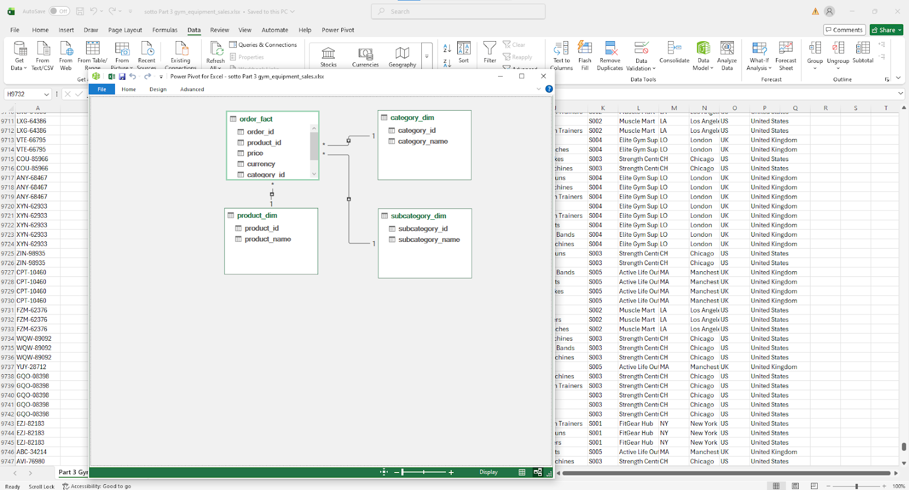

BSCS C301 | Gamer
Hello! I am John Kenneth Sotto. I love to travel to faraway places by bicycle and I also love to play online games.
This study analyzes people’s preference between street food and fast food using descriptive analysis. It focuses on factors such as taste, price, convenience, and food quality to understand customer choices. The results can help food vendors improve their offerings, support better business strategies, and assist local authorities in supporting food businesses..

This dataset contains sales and business transaction records, including information such as date, client, contacts, department, state, payment method, revenue, profit, and profit margin. It is used to analyze business performance, revenue generation, and profitability across different transactions..

The Bike Sales file is a dataset that records bicycle sales transactions. It includes information such as order number, date of purchase, customer age and age group, gender, country and state, product category and model, quantity ordered, unit cost, unit price, profit, total cost, and revenue. This data is used to analyze sales performance, customer demographics, and product profitability across different locations and time periods.

The Bike Sales Pivot Lab file presents a summary analysis of the bike sales dataset using Pivot Tables and charts. It shows key insights such as total order quantity and profit grouped by age group, country, and customer demographics, helping identify sales performance and trends across different regions and customer segments.

Used for calculations, data analysis, and data cleaning. It includes functions like IF, AND, OR, VLOOKUP, TEXT, CONCATENATE, and date/time functions, along with their syntax, examples, and exercises to help users understand how to use them in Excel.

this data visualization contains retailer transaction records showing the retailer name, retailer ID, invoice date, and sales region. It is used to track sales activity over time and analyze retailer performance across different regions.

Used to practice formulas and data analysis. It includes information such as item names, units, cost, sales price, and total profit, along with exercises that use Excel functions like VLOOKUP, SUM, IFERROR, and other formulas to calculate and organize the data.

Used for an Excel activity. It includes details such as order numbers, dates, product codes, product names, prices, and currency, which are used to analyze sales transactions and practice data processing in Excel.

Email: johnkennethsotto010@gmail.com
Phone: 09534538810
GitHub: github.com/John Kenneth Sotto